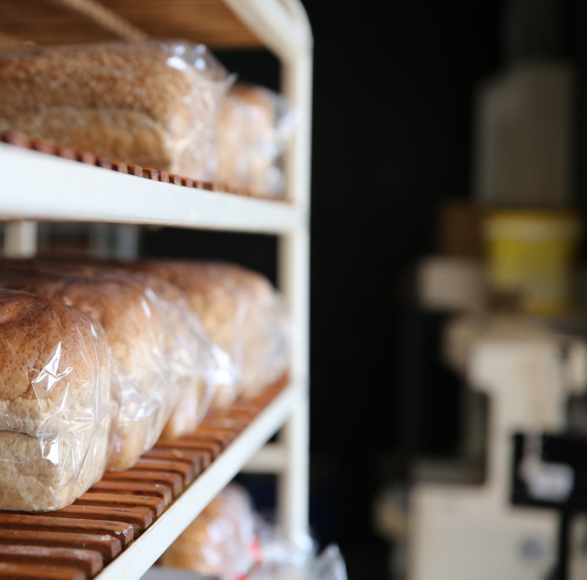

Weert, de vlaaienstad: Je ruikt het al voordat je binnen bent: versgebakken brood, warme Limburgse vlaai en iets zoets uit de oven. Aan de Parallelweg 168 in Weert vind je bakkerij ‘Broodnodig’ van Kr8tig. Een plek waar elke dag gewerkt wordt aan ambachtelijke producten én aan de ontwikkeling van deelnemers.
In onze bakkerij zie je deelnemers aan het werk. De één haalt brood uit de oven, de ander werkt met aandacht een vlaai af en weer een ander helpt klanten met hun bestelling. Tussen al die werkzaamheden door loopt altijd een vakkundige begeleider mee. Die helpt, legt uit en stuurt bij waar nodig. Het bijzondere is dat je dit als bezoeker gewoon ziet. Alles gebeurt in een open ruimte, waar je van dichtbij meemaakt hoe producten worden gemaakt.
De bakkerij staat niet op zichzelf. In het gebouw van Kr8tig gebeurt van alles: horeca, techniek, schoonheidssalon en creatieve werkplekken. Overal werken deelnemers die ergens anders zijn vastgelopen. Hier krijgen ze de ruimte om opnieuw te beginnen en stap voor stap te ontdekken wat ze wél kunnen. Met elke aankoop in onze bakkerij draag je direct bij aan hun ontwikkeling.
In onze bakkerij in Weert proef je het ambacht terug in elk product. Je vindt hier onder andere:
Bekijk hier ons volledige assortiment en de prijslijst.
Download PDF PrijslijstJe bent welkom in onze bakkerij in Weert. Loop gerust binnen, kijk rond en ervaar wat hier elke dag wordt gemaakt. Wil je iets bestellen? Stuur dan minimaal één werkdag van tevoren een e-mail naar bestellenbakkerij@kr8tig.nl. Wij zijn geopend van maandag t/m vrijdag van 09.00 tot 16.00 uur.